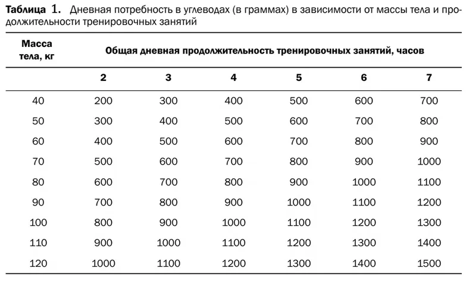
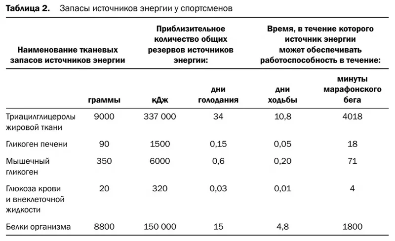
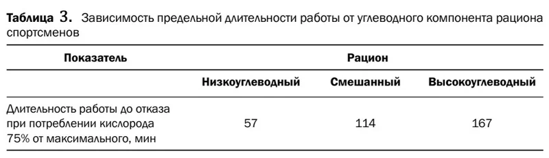

Адекватное обеспечение биоэнергетических процессов, прежде всего, связано с углеводами, содержание которых в пищевом рационе спортсменов обычно составляет от 60 до 70% от общего количества энергии, поставляемой в организм с пищей. Суточное потребление углеводов с пищей должно составлять у спортсменов от 500 до 1000 г — в среднем около 10 г на 1 кг массы тела (табл. 1).
В этой суточной дозе должны быть представлены как простые сахара (глюкоза, фруктоза, сахароза), так и сложные полимерные формы углеводов (крахмал, клетчатка).
Их соотношение в потребляемых пищевых продуктах может изменяться в зависимости от характера предстоящей мышечной работы. В пище, применяемой перед выполнением интенсивной, но относительно кратковременной работы, должны быть в большей степени представлены простые сахара (глюкоза, фруктоза) в легкоусвояемой форме (фруктовые соки, напитки, желе). В пищевом рационе, предшествующем выполнению игровой деятельности переменной или умеренной интенсивности, должны быть представлены, наряду с простыми сахарами, также и сложные полимерные формы углеводов (клетчатка, крахмал).
Обычной проблемой диеты спортсменов, специализирующихся в тех видах спорта, где требуется большая затрата энергии, является недостаточное количество углеводной пищи и избыток жировой. Такой рацион неоправдан в первую очередь в связи с тем, что энергетические резервы организма преимущественно состоят из жиров и белков и лишь в малой степени — из углеводов (табл. 2).
Высокая значимость углеводов в питании спортсменов определяется ролью гликогена мышц, обеспечивающего работоспособность как в аэробном, так и в анаэробном гликолитическом режиме. Время работы в этих режимах до истощения непосредственно связано с начальным запасом гликогена в работающих мышцах, потреблявших пищу 2800 ккал/сутки. При низкоуглеводном рационе за счет углеводов поставляется 1200 ккал/сутки, а при высокоуглеводном — 2300 ккал/сутки. При этом предельная длительность работы наиболее высока при рационе, обогащенном углеводами (табл. 3).
С другой стороны, введение в рацион спортсмена значительного количества продуктов, содержащих углеводы, за счет снижения других источников энергии не может рассматриваться как лучший способ удовлетворения потребностей организма в углеводах. Разовое употребление большого количества углеводов создает высокую “сахарную” нагрузку на поджелудочную железу, вырабатывающую инсулин, необходимый для усвоения углеводов в тканях. При этом большая часть углеводов, поступающих в организм в процессе пищеварения, направляется на создание внутриклеточных запасов углеводов в форме гликогена, а часть, из-за их высокой концентрации в крови, выводится из организма через почки. При такой ситуации, если мышечная нагрузка будет приходиться на период времени, далеко отстоящий от приема пищи (через три-четыре часа), наиболее нагружаемые органы и ткани могут испытывать относительную гипогликемию (снижение концентрации сахара) из-за невозможности быстрой мобилизации углеводов из внутриклеточных депо.
Поэтому спортсменам при интенсивных тренировочных и соревновательных нагрузках рекомендуется, наряду с приемом углеводов за завтраком, обедом и ужином, распределять большую часть их суточной дозы на промежуточные приемы пищи в виде фруктов и фруктовых соков, специально приготовленных углеводных напитков, чая, кофе, шоколада, печенья и т.п.
Потребление значительного количества простых углеводов, особенно глюкозы, вызывает резкое повышение уровня сахара в крови. Кроме того, систематическое поступление в организм избыточного количества легкоусвояемых углеводов может вызвать развитие сахарного диабета, а избыток поступающих в значительном количестве простых углеводов способствуют усиленному развитию жировой ткани. Повышенное содержание в крови инсулина способствует ускорению этого процесса, поскольку в этом случае инсулин оказывает мощное стимулирующее действие на синтез жиров.
Углеводы, поступающие с пищей, превращаются в гликоген, откладывающийся в тканях и образующий депо углеводов, из которого при необходимости организм черпает глюкозу, используемую для обеспечения энергией различных физиологических функций. Основными органами, в которых откладываются значительные количества гликогена, являются печень и скелетные мышцы.
Для полного восстановления после интенсивной физической нагрузки необходимо восполнить запасы гликогена в печени и мышцах. Ресинтез гликогена довольно медленный процесс (всего 5% в час), который занимает около 20 часов и требует большого количества углеводов. Исключением являются первые два часа после тренировки (так называемое белково-углеводное окно), во время которых скорость восстановления увеличивается до 7-8%.
Украинскими учеными (Левин, Ноур, 1996) были разработаны схемы рационального питания, являющиеся дополнительными стимулами создания запасов гликогена в мышцах сочетанием диеты и тренировочных нагрузок. Основанием для этого послужил тот факт, что у спортсменов, в режиме питания которых высокоуглеводный рацион сменял белково-жировой, сочетавшийся с тяжелыми тренировочными нагрузками, отмечались большие запасы гликогена в мышцах по сравнению с обычным смешанным рационом, предшествующим использованию высокоуглеводного.
На основе этих данных, свидетельствующих о стимулировании увеличения запасов гликогена сверх обычного уровня после периода тяжелой тренировки с резко обедненным углеводами рационом, была разработана “классическая методика” достижения “суперкомпенсации” гликогена мышц. Она заключалась в таких последовательных действиях в пределах микроцикла тренировки.
Такой способ углеводной суперкомпенсации рекомендуется использовать в предсоревновательном микроцикле.
Однако при практическом его использовании могут возникать определенные проблемы, связанные с индивидуальными особенностями спортсменов. В частности, некоторые из них плохо переносят крайне низкое (при белково-жировом рационе) или крайне высокое (90%) содержание углеводов в схемах питания. Поэтому прежде чем использовать такую схему суперкомпенсации гликогена мышц перед соревнованиями, следует проверить ее эффективность (переносимость) для конкретных спортсменов на предварительных этапах подготовки.
Если спортсмен плохо переносит этот крайний вариант суперкомпенсации мышечного гликогена, можно использовать более мягкий модифицированный вариант воздействия на организм в последнем предсоревновательном микроцикле.
Этот модифицированный план стимуляции суперкомпенсации гликогена мышц состоит в проведении тренировок с интенсивностью нагрузок, составляющих 70–75% от максимального потребления кислорода, при уменьшении их продолжительности от 90 до 40 минут в течение трех дней, при относительно низкоуглеводном рационе (50% углеводов, около 350 г в день). Вслед за этим в течение двух дней длительность тренировочных нагрузок сокращается до 20 минут, но при более богатом углеводами питании (70% углеводов, около 500–600 в день) и затем, наконец, следует день отдыха перед соревнованиями с таким же высокоуглеводным рационом.